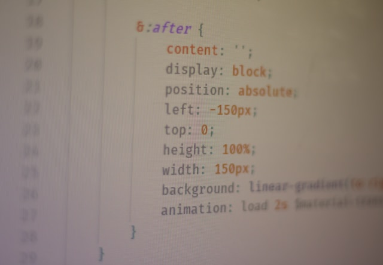
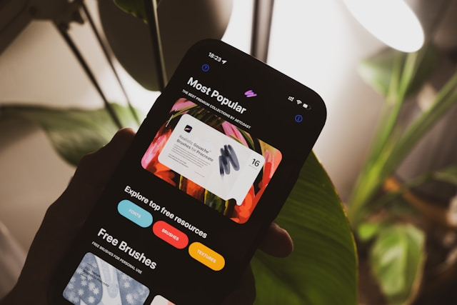

Photo by Mockaroon on Unsplash.
Introduction to CSS Flexbox
CSS Flexbox, short for the Flexible Box Layout Module, is a layout system designed to make it easier to align, distribute, and organize elements in a container, even when their size is unknown or dynamic. Before Flexbox, web developers relied heavily on floats, inline-block hacks, and complicated positioning tricks to create layouts that were only somewhat responsive and at times fragile. Flexbox was introduced to solve these pain points by providing a more intuitive, powerful, and predictable way to control layout in one dimension, either as rows or columns.
At its core, Flexbox is about relationships between a parent container and its children.
When you set
display: flex; on a container, that element becomes a flex container, and its
direct children
become flex items. From there, you can control how those items grow, shrink, wrap, and
align. This makes
Flexbox especially useful for building navigation bars, card layouts, and responsive
sections that need to
adapt gracefully to different screen sizes. Instead of manually calculating widths or
relying on rigid
grids, Flexbox lets the browser do the heavy lifting.
Flexbox is also a natural fit for mobile-first design. On small screens, content often needs to stack in a single column, with generous spacing and clear hierarchy. As the screen size increases, Flexbox makes it easy to rearrange items into rows, align them side by side, or center them both vertically and horizontally. This progressive enhancement approach aligns perfectly with modern responsive design practices, where the mobile experience is treated as the foundation rather than an afterthought.
In this single page website, we will explore how Flexbox works, why it is so widely used, and how it can support a mobile-first workflow. We will start with the basic concepts, move into real world layout examples, and then look at more advanced techniques that give you fine grained control over how elements behave. By the end, you should have a clear understanding of why Flexbox is considered one of the most important tools in modern CSS.

Photo by Hal Gatewood on Unsplash.
Core Concepts of Flexbox
To use Flexbox effectively, it is important to understand its core concepts and terminology.
The first key
idea is the distinction between the main axis and the cross axis. The main axis is the
primary direction in
which flex items are laid out, and it is controlled by the flex-direction
property. When
flex-direction: row; is used, the main axis runs horizontally from left to
right, and the cross
axis runs vertically. When flex-direction: column; is used, the main axis runs
vertically, and
the cross axis runs horizontally. This mental model helps you reason about how items will
align and wrap.
Another essential concept is alignment along these axes. The justify-content
property controls
how items are distributed along the main axis. Common values include
flex-start,
center, space-between, and space-around. These values
let you push
items to the edges, center them, or distribute extra space between them. On the cross axis,
align-items controls how items are aligned relative to each other. For example,
align-items: center; vertically centers items within the container when the
main axis is
horizontal.
Flexbox also introduces the idea of flexible sizing through properties like
flex-grow,
flex-shrink, and flex-basis. These three properties are often
combined into the
shorthand flex. The flex-grow value determines how much an item
can grow relative
to its siblings when extra space is available. The flex-shrink value determines
how much an
item can shrink when there is not enough space. The flex-basis value sets the
initial size of
the item before growing or shrinking is applied. Together, they allow you to create layouts
where some
elements are more dominant while others remain compact.
Finally, Flexbox supports wrapping and multi-line layouts through the flex-wrap
property. By
default, flex items will try to fit on a single line, which can cause them to shrink more
than desired on
small screens. Setting flex-wrap: wrap; allows items to move onto additional
lines when needed.
This is especially useful for responsive card layouts or navigation menus that need to adapt
to different
screen widths. Understanding these core concepts, including axes, alignment, flexible sizing, and wrapping, provides a strong foundation for building more complex and responsive designs with Flexbox.

Photo by Ferenc Almasi on Unsplash.
Real-World Flexbox Layouts
One of the reasons CSS Flexbox is so popular is its practicality in real-world layouts. A
common example is
the navigation bar. On a mobile device, a navigation menu often needs to collapse into a
hamburger icon to
save space. When the menu is expanded, the links can be stacked vertically in a column.
Flexbox makes this
straightforward: the navigation container can be a flex container, and the links can be flex
items that
stack or align based on the screen size. As the viewport grows, the same navigation can be
rearranged into a
horizontal row with evenly spaced links, simply by changing the flex-direction
and alignment
properties at different breakpoints.
Another powerful use case is card-based layouts, such as feature sections, product grids, or
article
previews. On small screens, each card can take up the full width of the container, creating
a clean,
scrollable column of content. With Flexbox, this is as simple as setting the container to
display: flex;, flex-direction: column;, and giving each card
consistent margins
and padding. On tablets and desktops, the same container can switch to
flex-direction: row; and
flex-wrap: wrap;, allowing multiple cards to appear side by side. The cards can
be given
flexible widths using the flex shorthand, so they automatically adjust to the
available space.
Flexbox also shines when it comes to centering content, which has historically been a
challenge in CSS.
With Flexbox, centering both horizontally and vertically can be achieved with just a few
properties:
display: flex;, justify-content: center;, and
align-items: center;.
This is especially useful for hero sections, call-to-action blocks, or any content that
needs to be
prominently positioned in the middle of the screen. On mobile devices, this kind of centered
layout can help
focus the user’s attention on the most important message or action.
In a mobile-first workflow, Flexbox supports progressive enhancement by allowing layouts to start simple and then become more sophisticated as the screen size increases. For example, a section that begins as a single column of text and an image on mobile can evolve into a two-column layout on tablets and a more complex multi-column arrangement on desktops. This flexibility reduces the need for separate templates or duplicated markup. Instead, a single HTML structure can adapt fluidly across devices, which is exactly what modern responsive design aims to achieve.

Photo by Dmitry Mashkin on Unsplash.
Advanced Flexbox Techniques
Once you are comfortable with the basics of Flexbox, you can begin exploring more advanced
techniques that
give you precise control over how elements behave. One of the most important advanced
features is the
flex shorthand, which combines flex-grow,
flex-shrink, and
flex-basis into a single declaration. For example,
flex: 1 1 200px; means that an
item will start at 200 pixels wide, can grow to fill available space, and can shrink if
necessary. By
assigning different flex values to different items, you can create layouts where some
elements are
intentionally more prominent than others, such as a main content area that is wider than a
sidebar.
Another advanced technique involves the order property, which allows you to
change the visual
order of flex items without altering the HTML structure. This can be particularly useful in
responsive
design. For instance, on mobile, you might want a call-to-action button to appear near the
top of the page,
while on desktop, it might make more sense for it to appear alongside supporting content.
With
order, you can rearrange items at different breakpoints using only CSS.
However, this feature
should be used thoughtfully, as it can affect keyboard navigation and screen reader users if
overused.
Flexbox can also be combined with other layout systems, such as CSS Grid, to create sophisticated designs. A common pattern is to use Grid for the overall page structure, defining major regions like the header, main, and footer, and then use Flexbox inside those regions for local alignment and distribution. For example, a header might be a grid area that contains a Flexbox-based navigation bar. This layered approach allows you to take advantage of the strengths of both systems: Grid for two-dimensional layouts and Flexbox for one-dimensional alignment.
In the context of a mobile-first, single-page website like this one, advanced Flexbox techniques support a polished and accessible user experience. The sticky navigation at the top of the page uses Flexbox to align the site title and navigation links, while the hamburger menu relies on Flexbox to stack and reveal links on small screens. As the viewport grows, media queries adjust the layout so that navigation links spread out horizontally, and content sections shift into multi-column arrangements. These enhancements demonstrate how Flexbox can be used not only to solve layout problems but also to progressively refine the design across devices.